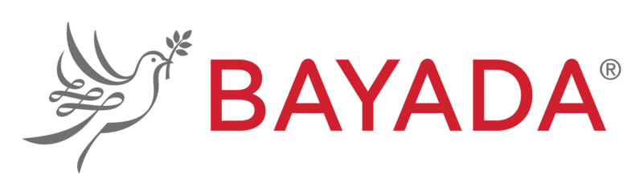

지역교회가 직접 운영하는 방문요양센터 기반 통합 돌봄 시범사업

HOME HEALTH CARE지역사회 돌봄 공백을 교회가 직접 메우고, 돌봄의 질은 재택의료 전문기관과 함께 지킵니다.
돌봄이 곧 전도가 되는 새로운 전도의 틀을 시범적으로 세우고자 합니다.
돌봄 인력 공급이 수요를 따라가지 못합니다
’25년 현재 국내 돌봄이 필요하다고 인정받은 사람은 123만 5천 명, 기관에 근무하는 요양보호사는 63만 7천 명으로 공공기관의 돌봄 인력 공급이 턱없이 부족한 상황입니다.
* 요양보호사 300만 명 중 현장 근무자 63만 7천 명 (국민건강보험공단, 「2025 노인장기요양보험 통계연보」, 2025년 기준)
통합돌봄법은 시행되었으나 지자체 준비가 미비합니다
’26. 3월부터 통합돌봄법이 시행되었으나 지자체에서는 조직·인력 준비가 미비한 상황입니다.
* 「의료·요양 등 지역 돌봄의 통합지원에 관한 법률」로써, 병원·요양원 말고 살던 집·동네에서 계속 살 수 있도록 흩어져 있던 의료·요양·돌봄을 시·군·구가 한 번에 묶어 지원하게 만든 법
** 한국보건사회연구원이 추산한 필요 인력 7,205명에 비해 정부가 반영한 전담인력은 5,394명
재정도 10년 안에 한계에 다다릅니다
가파른 초고령화 시대에 10년 내에 장기요양보험 지출도 증가(’25년 17.6조원 → ’34년 40.9조원)하여, 누적준비금은 2027년 적자가 시작되어 2030년에 고갈될 것으로 예상됩니다.
* 국회예산정책처(NABO), 「노인장기요양보험 지출 증가요인 및 시사점」 (2025. 6. 17.)
그래서 교회가 직접 나서고, 질 관리는 전문기관과 함께합니다
지역사회 돌봄 공백을 교회 주관 방문요양센터를 직접 운영하고, 돌봄 직원의 질(Quality) 관리 및 교육은 재택의료사업에 10년 이상 노하우를 가지고 있는 Bayada와 협력하여, 돌봄이 전도가 되는 전도의 새로운 프레임(‘찾아가는 교회’)을 시범적으로 구축하고자 합니다.
본 문서는 ‘찾아가는 교회’ 시범사업 논의를 위한 컨셉 페이퍼이며, 확정된 제안이 아닙니다. 수치는 국민건강보험공단·국회예산정책처·한국보건사회연구원 공개자료 기준입니다.
1 / 2‘찾아가는 교회’에 참여할 지역 교회 2개소를 추천하고, 지역 교회에 노인 등 돌봄이 필요한 자에게 복음을 전할 수 있도록 사랑의교회 내에 ‘돌봄전폭팀’(가칭)을 신설·운영하여 지역 교회 성도 전도훈련과정을 마련합니다. (예산 필요)
지역 교회 내 사회복지 자격증을 가지고 있는 성도들을 중심으로 지역사회 전도 거점을 정하고, 방문요양센터를 각 1개소씩 설립(신규)합니다. (설치 및 운영 비용 필요)
* 설치기준 : (시설) 약 5평 이상, (요양보호사) 15명 이상(농어촌 5명 이상), (관리책임자) 사회복지사·간호사 등, (비용) 약 1,500~3,000만원
* 시범사업 결과는 Bayada에서 정리하여 보건복지부·국민건강보험공단 등에 요양보호사 처우 개선 근거자료로 활용
방문요양센터 직원을 대상으로 온·오프라인 교육 및 모니터링을 실시하고 질(Quality) 관리를 수행합니다. (무상 교육)
| 등급 | 명칭 | 경력 | 교육·자격 요건 | 역할 | 가산율 |
|---|---|---|---|---|---|
| L1 | 요양보호사 | 0~2년 | 요양보호사 자격 | 기본 돌봄 | 10% |
| L2 | 숙련요양보호사 | 2년 이상 | + 치매전문교육 이수 | 중증·치매 대응 | 15% |
| L3 | 선임요양보호사 | 5년 이상 | + 전문교육 2개(호스피스·재활 등) | 신입 지도, 사례관리 보조 | 20% |
| L4 | 책임요양보호사 | 8년 이상 | + 상위자격(사회복지사·간호조무사) 또는 교육강사 과정 | 교육·품질관리, 케어플랜에 참여 | 24.5% |
별도 논의가 필요한 사항
임금 가산금 체계 시범사업 도입을 고려할 경우, 가산금 지불 주체 및 방법에 대한 별도 논의가 필요합니다.
사랑의교회 · Bayada 협력 시범사업 논의용 초안입니다. 표의 임금체계는 일본 개호보수 체계를 참고한 예시이며, 적용 수준은 협의를 통해 조정될 수 있습니다.
2 / 2